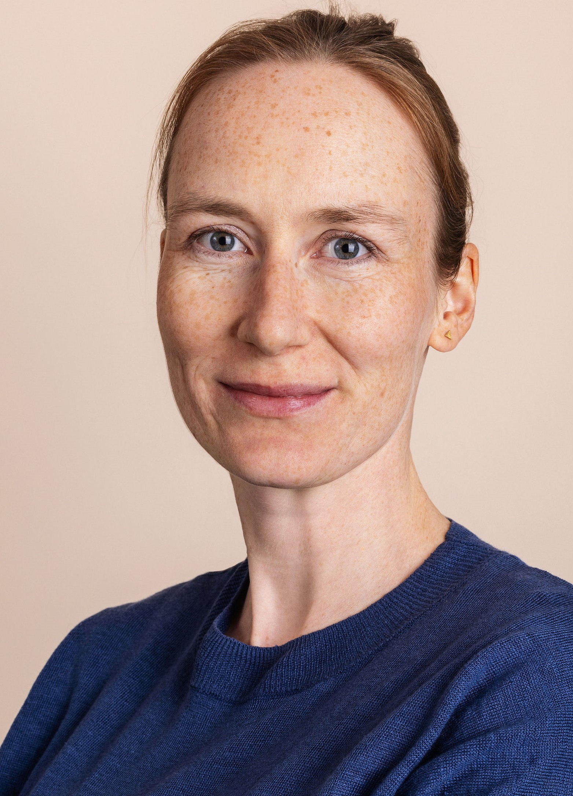

I am an applied economist working on topics in labor economics, immigration and education. My recent work combines microeconometric analysis and field experiments to better understand how to support jobseekers. I am also a co-founder of Path2Work.
I am a Postdoctoral Researcher in the Labor Group led by Rafael Lalive at the University of Lausanne. I completed my PhD in Economics at the University of St.Gallen under the supervision of Reto Föllmi (2022). I visited the NHH in Bergen in 2024, hosted by Aline Bütikofer and the Universitat Pompeu Fabra in 2021 and 2022, hosted by Albrecht Glitz. See my CV for more information.
Free Movement of Workers and Native Demand for Tertiary Education, with Teodora Tsankova, The Journal of Human Resources (2023, published online before print)
Ranking occupations by their proximity to workers’ profiles, with Hélène Benghalem, Doriana Tinello, Damaris Aschwanden, Sascha Zuber, Matthias Kliegel, Michele Pellizzari, Rafael Lalive Swiss Journal of Economics and Statistics (2024)
Labor Protection and Support for Immigration, with Teodora Tsankova, R&R Industrial & Labor Relations Review
Immigration, Inequality and Income Taxes, with Albrecht Glitz, R&R at the American Economic Journal: Applied Economics
Helping Jobseekers with Recommendations Based on Skill Profiles or Past Experience: Evidence from a Randomized Intervention, with Rafael Lalive and Michele Pellizzari
Supporting Job Search through Cognitive Training, with Hélène Benghalem, Rafael Lalive, Michele Pellizzari et al.
Path2Work: Targeted support of job search for refugees using an online job platform, with Achim Ahrens, Philip Grech, Dominik Hangartner, Rafael Lalive